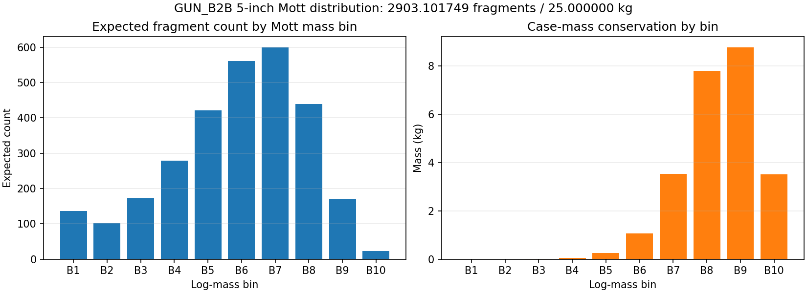
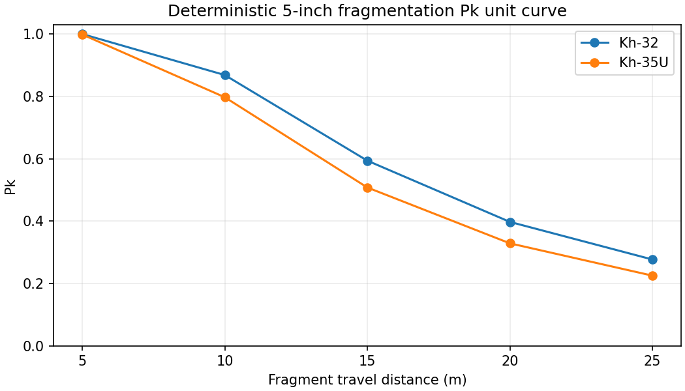
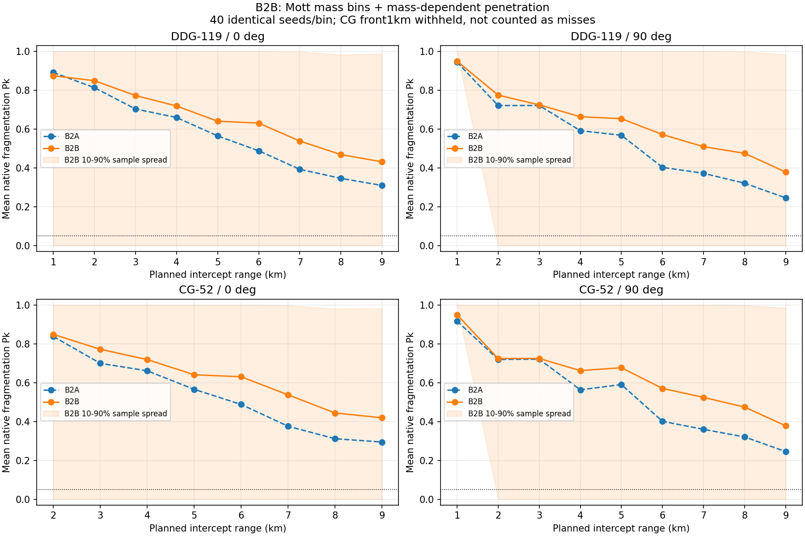
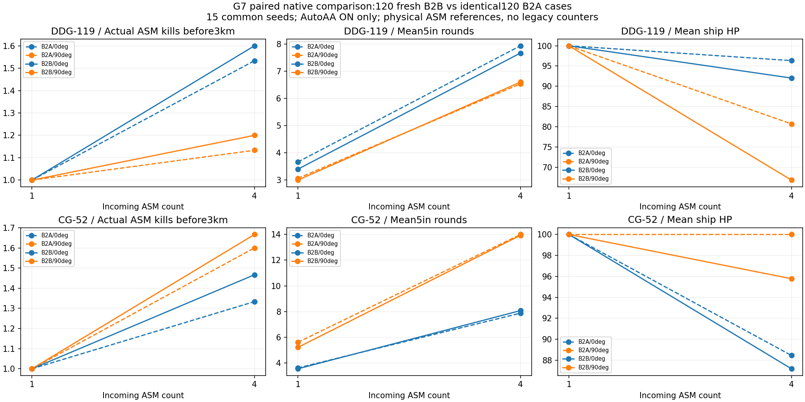

5인치 Mott 게임 모델과 지정 측정 완료. 실물 성능 주장이 아니며 남은 SIM_TUNED 가정은 보고서에 공개했다.




# GUN_B2B — 공개 상수로 제한한 5인치 Mott 게임 모델 작성 2026-11-01 10:43 KST. 기준은 gun-b2 fa0fdde9 / B2A HTML 9515e70c…다. 이 결과는 게임용 `SIM_TUNED` 모델이며 실물 무기 성능 주장이 아니다. main 병합·release·tag는 하지 않았다. **결과:** 단발 1440시도/1400발과 자연 G7 120회를 완료했다. 런타임 질량·Pk 검산=True, 지정 5인치 회귀=True, 소스범위 감사=True. 결과를 맞추기 위한 계수·시드·거리 변경은 없었다. ## 1. 적용값과 출처 | 항목 | B2A → B2B | 근거 | |---|---:|---| | 파편화 탄체 질량 | 9 → **25 kg** | 비파편 부품 공개 질량 부재, `SIM_TUNED` 24–26 kg 중 25 kg | | Comp B Gurney | 2,200 → **2773.68 m/s** | SAND94-2255 표5, 9,100 ft/s | | 계산 파편속도 | 1,284.721 → **1029.639 m/s** | 원통 Gurney, M/C=25/3.7 | | Mott B | 없음 → **0.0554 lb^1/2 in^-7/6** | SAND94-2255 표6 | | Mott μ / N0 | 고정1200개 → **4.305740 g / 2903.101749개** | 10개 유한·꼬리 질량 구간 | | V50 기준질량 | 불명 → **1.1 g** | NIJ 0117.01의 .22 FSP 질량을 게임 V50에 매핑(`SIM_TUNED`) | | 신관 중심 | 45.943756° → **43.155075°** | B2A G7 실제 기폭 631개, 속도 중앙값 662.851m/s | 등가 원통은 외경127mm, 내경 80.499mm, 벽 23.251mm, 유효 길이 422.938mm다. 질량·체적 보존용 대용 형상이며 실탄 측정치가 아니다. 출처·충돌·남은 가정은 [SOURCES.md](SOURCES.md)에 분리했다. ## 2. 분포·관통·Pk 검산 10개 구간 합은 **2903.101749416248개 / 25.000000000000004kg**다. 런타임과 오프라인 Pk 최대 오차는 1.11e-16, 질량 최대 오차는 3.55e-15kg다. | 표적 | 거리 m | expected lethal hits | Pk | |---|---:|---:|---:| | Kh-35U | 5 | 6.380756 | 0.998306 | | Kh-35U | 10 | 1.595189 | 0.797130 | | Kh-35U | 15 | 0.708973 | 0.507851 | | Kh-35U | 20 | 0.398797 | 0.328873 | | Kh-35U | 25 | 0.255230 | 0.225262 | | Kh-32 | 5 | 8.108414 | 0.999699 | | Kh-32 | 10 | 2.027103 | 0.868283 | | Kh-32 | 15 | 0.900935 | 0.593810 | | Kh-32 | 20 | 0.506776 | 0.397565 | | Kh-32 | 25 | 0.324337 | 0.276993 | 관통은 기존 표적 `fragPenV50Mps/fragPenWidthMps`와 기존 impact-speed proxy를 유지하고, 각 Mott 구간에 `V50_ref*(m_ref/m)^(1/3)`만 적용한다. 기존 `coneAspectFactor`와 SAM rod cluster 처리는 쓰지 않는다. 몸체90°±20° 판정·도달시간·vital area는 유지하며 띠 밖 손실은 여전히 `SIM_TUNED` 미구현이다. [구간 CSV](mott-bins.csv) · [거리×구간 CSV](unit-pk-bins.csv). ## 3. 단발 1,440시도 | 함정 / 방위 | B2B 1–9km 평균 Pk 범위 | 실제 발사 | band reject | 링 | |---|---:|---:|---:|---| | CG_52_LATE_TICONDEROGA / 0° | 0.419680–0.849191 | 320 | 98 | ≥9km, right-censored | | CG_52_LATE_TICONDEROGA / 90° | 0.377970–0.949868 | 360 | 112 | ≥9km, right-censored | | DDG_119_LATE_FLIGHT_IIA / 0° | 0.431471–0.874804 | 360 | 102 | ≥9km, right-censored | | DDG_119_LATE_FLIGHT_IIA / 90° | 0.378504–0.949936 | 360 | 112 | ≥9km, right-censored | B2A와 직접 비교 가능한35구간의 평균 Pk 변화는 +0.091200, 최소 -0.016695, 최대 +0.169345다. CG 정면1km40건은 기존과 같은 `MOUNT_OCCLUDED` 발사보류이며 비명중으로 넣지 않았다. 9km까지 .05 외측 하강 교차가 없어 링은 성능 보증이 아닌 검열값이다. ## 4. 자연 G7 120회 — B2A 대비 동일120조건에서 HP 악화 **10**, 개선 **4**, 동일 **106**회다. 실적은 물리 ASM 참조와 사망 tick을 사용하며 legacy 카운터를 격추로 세지 않았다. | 함정 / 방위 / 표적수 | B2A 3km전 격추 → B2B | B2A 평균HP → B2B | B2A 5in발 → B2B | |---|---:|---:|---:| | CG_52_LATE_TICONDEROGA / 0° / 1 | 1.000 → 1.000 | 100.000 → 100.000 | 3.600 → 3.533 | | CG_52_LATE_TICONDEROGA / 0° / 4 | 1.333 → 1.467 | 88.454 → 87.182 | 7.867 → 8.067 | | CG_52_LATE_TICONDEROGA / 90° / 1 | 1.000 → 1.000 | 100.000 → 100.000 | 5.600 → 5.200 | | CG_52_LATE_TICONDEROGA / 90° / 4 | 1.600 → 1.667 | 100.000 → 95.779 | 14.000 → 13.933 | | DDG_119_LATE_FLIGHT_IIA / 0° / 1 | 1.000 → 1.000 | 100.000 → 100.000 | 3.667 → 3.400 | | DDG_119_LATE_FLIGHT_IIA / 0° / 4 | 1.533 → 1.600 | 96.338 → 92.021 | 7.933 → 7.667 | | DDG_119_LATE_FLIGHT_IIA / 90° / 1 | 1.000 → 1.000 | 100.000 → 100.000 | 3.067 → 3.000 | | DDG_119_LATE_FLIGHT_IIA / 90° / 4 | 1.133 → 1.200 | 80.683 → 66.796 | 6.533 → 6.600 | ## 5. 검증과 범위 | 검사 | 결과 | |---|---| | native | 41/41, pass=True | | geometry | 5/5, pass=True | | physical-adapter | 5/5, pass=True | | B1-UI | 76/76, pass=True | | MAP_D-gun-flow | 9/9, pass=True | | MAP_D-UI-existing-migration | 213/213, pass=True | | paired42-ON | 42/42, pass=True | 전체 기존 심벌 중 변경은 `GUN_B1_SPEC, GUN_B2_SPEC, GUN_B2_RANGE_TABLE, gunB2FragmentationPk, gunB1FragmentationPk`뿐이며 새 심벌은 `gunB15inMottFragmentationPk` 하나다. 기존 보호 함수281/281, `_wip88FragmentationPk`, SAM 파편·신관, RF/EKF, 저장, ENVELOPE_TABLE_D, 수상 HE 첫발 함수는 바이트 동일하다. 표시용 range table만 측정 후 갱신했으며 발사 관문에는 연결하지 않았다. physical-adapter의 두 단언은 사용자 승인대로 “native 피해 경로 실행”과 “KILL/MISS/DAMAGED 결과 기록”을 검사한다. fixture의 seed·통과거리·계수는 그대로다. 이 실행에서는 결과가 KILL/Pk 0.670001이었다. 다른 기대값과 허용 오차는 바꾸지 않았다. ## 6. 남은 판단 - Mk 80 비파편 부품별 공개 질량과 실제 벽 형상을 찾지 못해 25kg 등가 원통이 남는다. - 기존 Kh-35U/Kh-32 V50의 원래 기준 파편 질량이 코드에 없어 1.1g FSP 매핑이 남는다. - 파편 띠 밖 손실률과 파편 공력 감속은 이번 범위에 없다. - 단발 링은 9km 상한에서 right-censored다. 더 먼 범위 측정은 별도 결정이 필요하다. - CIWS·피해모델·CG 정면 사각·NPC 함포는 지시대로 수정하지 않았다. 제품 SHA-256: `d2ae791e38221ec660283989728ea50e0eeb9075c2501cdbef9086e6c61cbc26`. 측정 원시자료·로그·CSV·도구·그림은 REPORT ZIP에 포함한다.